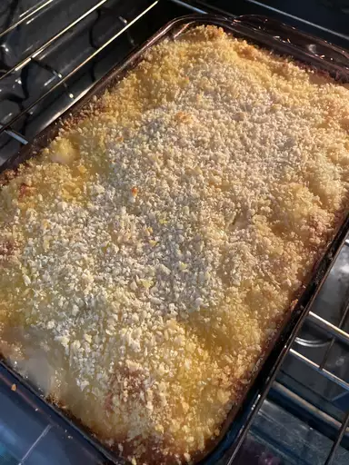

Creamy Au Gratin Potatoes

Ingredients
- Potatoes
- Onions
- Seasonings
- Butter and flour
- Milk
- Cheese
Steps
- Assemble the casserole: Layer half of the potatoes in the bottom of the prepared baking dish. Season. Layer onion slices over top, then top with remaining potatoes. Season again.
- Make the sauce: Melt the butter in a saucepan. Gradually whisk in flour and salt and cook for about 1 minute. Gradually whisk in the milk. Cook, whisking constantly, until the mixture has thickened. Stir in the cheese.
- Bake the casserole: Pour the sauce over the potatoes. Cover the dish with foil and bake in the preheated oven until the potatoes are tender and the sauce is bubbling.